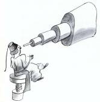
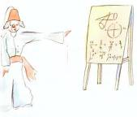
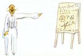

J’avais ainsi appris une seconde chose très importante : C’est que sa planète d’origine était à peine plus grande qu’une maison !
Ça ne pouvait pas m’étonner beaucoup. Je savais bien qu’en dehors des grosses planètes comme la Terre, Jupiter, Mars, Vénus, auxquelles on a donné des noms, il y en a des centaines d’autres qui sont quelquefois si petites qu’on a beaucoup de mal à les apercevoir au télescope. Quand un astronome découvre l’une d’elles, il lui donne pour nom un numéro. Il l’appelle par exemple : « l’astéroïde 3251. »
J’ai de sérieuses raisons de croire que la planète d’où venait le petit prince est l’astéroïde B 612. Cet astéroïde n’a été aperçu qu’une fois au télescope, en 1909, par un astronome turc.

Il avait fait alors une grande démonstration de sa découverte à un Congrès International d’Astronomie. Mais personne ne l’avait cru à cause de son costume. Les grandes personnes sont comme ça.

Heureusement pour la réputation de l’astéroïde B 612 un dictateur turc imposa à son peuple, sous peine de mort, de s’habiller à l’Européenne. L’astronome refit sa démonstration en 1920, dans un habit très élégant. Et cette fois-ci tout le monde fut de son avis.

Si je vous ai raconté ces détails sur l’astéroïde B 612 et si je vous ai confié son numéro, c’est à cause des grandes personnes. Les grandes personnes aiment les chiffres. Quand vous leur parlez d’un nouvel ami, elles ne vous questionnent jamais sur l’essentiel. Elles ne vous disent jamais : « Quel est le son de sa voix ? Quels sont les jeux qu’il préfère ? Est-ce qu’il collectionne les papillons ? » Elles vous demandent : « Quel âge a-t-il ? Combien a-t-il de frères ? Combien pèse-t-il ? Combien gagne son père ? » Alors seulement elles croient le connaître. Si vous dites aux grandes personnes : « J’ai vu une belle maison en briques roses, avec des géraniums aux fenêtres et des colombes sur le toit… » elles ne parviennent pas à s’imaginer cette maison. Il faut leur dire : « J’ai vu une maison de cent mille francs. » Alors elles s’écrient : « Comme c’est joli ! »
Ainsi, si vous leur dites : « La preuve que le petit prince a existé c’est qu’il était ravissant, qu’il riait, et qu’il voulait un mouton. Quand on veut un mouton, c’est la preuve qu’on existe » elles hausseront les épaules et vous traiteront d’enfant ! Mais si vous leur dites : « La planète d’où il venait est l’astéroïde B 612 » alors elles seront convaincues, et elles vous laisseront tranquille avec leurs questions. Elles sont comme ça. Il ne faut pas leur en vouloir. Les enfants doivent être très indulgents envers les grandes personnes.
Mais, bien sûr, nous qui comprenons la vie, nous nous moquons bien des numéros ! J’aurais aimé commencer cette histoire à la façon des contes de fées. J’aurais aimé dire :
« Il était une fois un petit prince qui habitait une planète à peine plus grande que lui, et qui avait besoin d’un ami… » Pour ceux qui comprennent la vie, ça aurait eu l’air beaucoup plus vrai.
Car je n’aime pas qu’on lise mon livre à la légère. J’éprouve tant de chagrin à raconter ces souvenirs. Il y a six ans déjà que mon ami s’en est allé avec son mouton. Si j’essaie ici de le décrire, c’est afin de ne pas l’oublier. C’est triste d’oublier un ami. Tout le monde n’a pas eu un ami. Et je puis devenir comme les grandes personnes qui ne s’intéressent plus qu’aux chiffres. C’est donc pour ça encore que j’ai acheté une boîte de couleurs et des crayons. C’est dur de se remettre au dessin, à mon âge, quand on n’a jamais fait d’autres tentatives que celle d’un boa fermé et celle d’un boa ouvert, à l’âge de six ans ! J’essaierai, bien sûr, de faire des portraits le plus ressemblants possible. Mais je ne suis pas tout à fait certain de réussir. Un dessin va, et l’autre ne ressemble plus. Je me trompe un peu aussi sur la taille. Ici le petit prince est trop grand. Là il est trop petit. J’hésite aussi sur la couleur de son costume. Alors je tâtonne comme ci et comme ça, tant bien que mal. Je me tromperai enfin sur certains détails plus importants. Mais ça, il faudra me le pardonner. Mon ami ne donnait jamais d’explications. Il me croyait peut-être semblable à lui. Mais moi, malheureusement, je ne sais pas voir les moutons à travers les caisses. Je suis peut-être un peu comme les grandes personnes. J’ai dû vieillir.